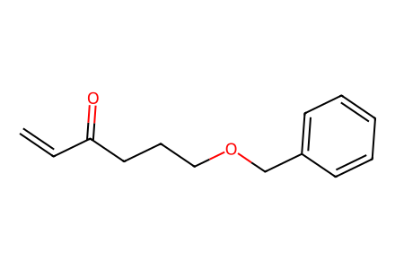
C=CC(=O)CCCOCc1ccccc1Main Scheme1 and SI preparations, two nitrogen-ring closures, epimer branches and asymmetric feasibility experiments. Racemic routes represented by one source-drawn enantiomer. Facts compiled deterministically; independent review pending.
完整 JSON · 逐步 CSV · 路线序列 · SDF · HRMS 核对
| 事件 | 分子连接 | 报告产率 | Canonical reaction SMILES |
|---|---|---|---|
| A01 | 20 + 21 → 22 | 22: 86% | C=CC(=O)CCCOCc1ccccc1.C=CC(O)CCCOCc1ccccc1>>O=C(/C=C/C(O)CCCOCc1ccccc1)CCCOCc1ccccc1 |
| A02 | 22 → 23a | 23a: 82% | O=C(/C=C/C(O)CCCOCc1ccccc1)CCCOCc1ccccc1>>CC(C)(C)[Si](OC(/C=C/C(=O)CCCOCc1ccccc1)CCCOCc1ccccc1)(c1ccccc1)c1ccccc1 |
| A02b | 22 → 23b | 23b: 77% | O=C(/C=C/C(O)CCCOCc1ccccc1)CCCOCc1ccccc1>>COCOC(/C=C/C(=O)CCCOCc1ccccc1)CCCOCc1ccccc1 |
| A03 | 23a → 24a + S1 | not reported | CC(C)(C)[Si](OC(/C=C/C(=O)CCCOCc1ccccc1)CCCOCc1ccccc1)(c1ccccc1)c1ccccc1>>CC(C)(C)[Si](O[C@H](CCCOCc1ccccc1)[C@@H]1O[C@@H]1C(=O)CCCOCc1ccccc1)(c1ccccc1)c1ccccc1.CC(C)(C)[Si](O[C@H](CCCOCc1ccccc1)[C@H]1O[C@H]1C(=O)CCCOCc1ccccc1)(c1ccccc1)c1ccccc1 |
| A03b | 23b → 24b | 24b: 73% | COCOC(/C=C/C(=O)CCCOCc1ccccc1)CCCOCc1ccccc1>>COCO[C@H](CCCOCc1ccccc1)[C@@H]1O[C@@H]1C(=O)CCCOCc1ccccc1 |
| A03-control | 23a → 24a + S1 | not reported | CC(C)(C)[Si](OC(/C=C/C(=O)CCCOCc1ccccc1)CCCOCc1ccccc1)(c1ccccc1)c1ccccc1>>CC(C)(C)[Si](O[C@H](CCCOCc1ccccc1)[C@@H]1O[C@@H]1C(=O)CCCOCc1ccccc1)(c1ccccc1)c1ccccc1.CC(C)(C)[Si](O[C@H](CCCOCc1ccccc1)[C@H]1O[C@H]1C(=O)CCCOCc1ccccc1)(c1ccccc1)c1ccccc1 |
| A04 | 24a + S1 → 25a + S2 | 25a: 55%; S2: 18% | CC(C)(C)[Si](O[C@H](CCCOCc1ccccc1)[C@@H]1O[C@@H]1C(=O)CCCOCc1ccccc1)(c1ccccc1)c1ccccc1.CC(C)(C)[Si](O[C@H](CCCOCc1ccccc1)[C@H]1O[C@H]1C(=O)CCCOCc1ccccc1)(c1ccccc1)c1ccccc1>>CC(C)(C)[Si](O[C@H](CCCOCc1ccccc1)[C@@H](O)[C@@H]1C[C@]1(O)CCCOCc1ccccc1)(c1ccccc1)c1ccccc1.CC(C)(C)[Si](O[C@H](CCCOCc1ccccc1)[C@H](O)[C@H]1C[C@@]1(O)CCCOCc1ccccc1)(c1ccccc1)c1ccccc1 |
| A04b | 24b → 25b | not reported | COCO[C@H](CCCOCc1ccccc1)[C@@H]1O[C@@H]1C(=O)CCCOCc1ccccc1>>COCO[C@H](CCCOCc1ccccc1)[C@@H](O)[C@@H]1C[C@]1(O)CCCOCc1ccccc1 |
| A05 | 25a → 26 | 26: 85% | CC(C)(C)[Si](O[C@H](CCCOCc1ccccc1)[C@@H](O)[C@@H]1C[C@]1(O)CCCOCc1ccccc1)(c1ccccc1)c1ccccc1>>O[C@H]([C@H](O)CCCOCc1ccccc1)[C@@H]1C[C@]1(O)CCCOCc1ccccc1 |
| A06 | 26 → 29 + 28 | 29: 50%; 28: 30% | O[C@H]([C@H](O)CCCOCc1ccccc1)[C@@H]1C[C@]1(O)CCCOCc1ccccc1>>O=C1C[C@@H]2[C@H](O)[C@@H](CCCOCc3ccccc3)O[C@]2(CCCOCc2ccccc2)O1.O=C1C[C@@H]2[C@H](O1)[C@@H](CCCOCc1ccccc1)O[C@]2(O)CCCOCc1ccccc1 |
| A06b | 28 → 29 | 29: 40% | O=C1C[C@@H]2[C@H](O1)[C@@H](CCCOCc1ccccc1)O[C@]2(O)CCCOCc1ccccc1>>O=C1C[C@@H]2[C@H](O)[C@@H](CCCOCc3ccccc3)O[C@]2(CCCOCc2ccccc2)O1 |
| A07 | 29 → 30 | 30: 83% | O=C1C[C@@H]2[C@H](O)[C@@H](CCCOCc3ccccc3)O[C@]2(CCCOCc2ccccc2)O1>>CS(=O)(=O)O[C@H]1[C@H]2CC(=O)O[C@@]2(CCCOCc2ccccc2)O[C@@H]1CCCOCc1ccccc1 |
| A08 | 30 → 31 | 31: 54% | CS(=O)(=O)O[C@H]1[C@H]2CC(=O)O[C@@]2(CCCOCc2ccccc2)O[C@@H]1CCCOCc1ccccc1>>[N-]=[N+]=N[C@@H]1[C@H]2CC(=O)O[C@@]2(CCCOCc2ccccc2)O[C@@H]1CCCOCc1ccccc1 |
| A09 | 31 → 32 | 32: 83% | [N-]=[N+]=N[C@@H]1[C@H]2CC(=O)O[C@@]2(CCCOCc2ccccc2)O[C@@H]1CCCOCc1ccccc1>>C[C@@H]1C(=O)O[C@@]2(CCCOCc3ccccc3)O[C@H](CCCOCc3ccccc3)[C@H](N=[N+]=[N-])[C@@H]12 |
| B01 | 32 → 33 | 33: 65% | C[C@@H]1C(=O)O[C@@]2(CCCOCc3ccccc3)O[C@H](CCCOCc3ccccc3)[C@H](N=[N+]=[N-])[C@@H]12>>C[C@@H]1C(=O)O[C@@]2(CCCOCc3ccccc3)O[C@H](CCCOCc3ccccc3)[C@H](NC(=O)OC(C)(C)C)[C@@H]12 |
| B02 | 33 → S3 | S3: 83% | C[C@@H]1C(=O)O[C@@]2(CCCOCc3ccccc3)O[C@H](CCCOCc3ccccc3)[C@H](NC(=O)OC(C)(C)C)[C@@H]12>>Cc1ccc(S(=O)(=O)OCCC[C@H]2O[C@]3(CCCOS(=O)(=O)c4ccc(C)cc4)OC(=O)[C@@H](C)[C@@H]3[C@H]2NC(=O)OC(C)(C)C)cc1 |
| B03 | S3 → S4 | not reported | Cc1ccc(S(=O)(=O)OCCC[C@H]2O[C@]3(CCCOS(=O)(=O)c4ccc(C)cc4)OC(=O)[C@@H](C)[C@@H]3[C@H]2NC(=O)OC(C)(C)C)cc1>>Cc1ccc(S(=O)(=O)OCCC[C@H]2O[C@]3(CCCOS(=O)(=O)c4ccc(C)cc4)OC(=O)[C@@H](C)[C@@H]3[C@H]2[NH3+])cc1 |
| B04 | S4 → 11 | not reported | Cc1ccc(S(=O)(=O)OCCC[C@H]2O[C@]3(CCCOS(=O)(=O)c4ccc(C)cc4)OC(=O)[C@@H](C)[C@@H]3[C@H]2[NH3+])cc1>>C[C@@H]1C(=O)O[C@@]23CCCN4CCC[C@@H](O2)[C@H]4[C@@H]13 |
| C01 | 32 → 34 | 34: 100% | C[C@@H]1C(=O)O[C@@]2(CCCOCc3ccccc3)O[C@H](CCCOCc3ccccc3)[C@H](N=[N+]=[N-])[C@@H]12>>C[C@@H]1C(=O)O[C@@]2(CCCO)O[C@H](CCCO)[C@H](N)[C@@H]12 |
| C02 | 34 → 11 | not reported | C[C@@H]1C(=O)O[C@@]2(CCCO)O[C@H](CCCO)[C@H](N)[C@@H]12>>C[C@@H]1C(=O)O[C@@]23CCCN4CCC[C@@H](O2)[C@H]4[C@@H]13 |
| D01 | 11 → 35 | 35: 60% | C[C@@H]1C(=O)O[C@@]23CCCN4CCC[C@@H](O2)[C@H]4[C@@H]13>>C[C@@H]1C(O)O[C@@]23CCCN4CCC[C@@H](O2)[C@H]4[C@@H]13 |
| D02 | 35 + 36 → 37a + 37b + 37c | not reported | CCOP(=O)(OCC)C1OC(=O)C(C)=C1OC.C[C@@H]1C(O)O[C@@]23CCCN4CCC[C@@H](O2)[C@H]4[C@@H]13>>COC1=C(C)C(=O)OC1[C@@H]1O[C@@]23CCCN4CCC[C@@H](O2)[C@H]4[C@H]3[C@@H]1C.COC1=C(C)C(=O)O[C@@H]1[C@H]1O[C@@]23CCCN4CCC[C@@H](O2)[C@H]4[C@H]3[C@@H]1C.COC1=C(C)C(=O)O[C@H]1[C@H]1O[C@@]23CCCN4CCC[C@@H](O2)[C@H]4[C@H]3[C@@H]1C |
| D03 | 37a + 37b + 37c → 38 | 38: 71% | COC1=C(C)C(=O)OC1[C@@H]1O[C@@]23CCCN4CCC[C@@H](O2)[C@H]4[C@H]3[C@@H]1C.COC1=C(C)C(=O)O[C@@H]1[C@H]1O[C@@]23CCCN4CCC[C@@H](O2)[C@H]4[C@H]3[C@@H]1C.COC1=C(C)C(=O)O[C@H]1[C@H]1O[C@@]23CCCN4CCC[C@@H](O2)[C@H]4[C@H]3[C@@H]1C>>COC1=C(C)C(=O)OC1(Br)[C@H]1O[C@@]23CCCN4CCC[C@@H](O2)[C@H]4[C@H]3[C@@H]1C |
| D04 | 38 → 1 + S5 | 1: 36% | COC1=C(C)C(=O)OC1(Br)[C@H]1O[C@@]23CCCN4CCC[C@@H](O2)[C@H]4[C@H]3[C@@H]1C>>COC1=C(C)C(=O)O/C1=C1/O[C@@]23CCCN4CCC[C@@H](O2)[C@H]4[C@H]3[C@@H]1C.COC1=C(C)C(=O)O/C1=C1\O[C@@]23CCCN4CCC[C@@H](O2)[C@H]4[C@H]3[C@@H]1C |
| E01 | 20 → (R)-21 | (R)-21: 39% | C=CC(=O)CCCOCc1ccccc1>>C=C[C@H](O)CCCOCc1ccccc1 |
| E01S | 20 → (S)-21 | (S)-21: 45% | C=CC(=O)CCCOCc1ccccc1>>C=C[C@@H](O)CCCOCc1ccccc1 |
| E02 | 20 + (R)-21 → (R)-22 | not reported | C=CC(=O)CCCOCc1ccccc1.C=C[C@H](O)CCCOCc1ccccc1>>O=C(/C=C/[C@H](O)CCCOCc1ccccc1)CCCOCc1ccccc1 |
| E03 | (R)-22 → (R)-23a | not reported | O=C(/C=C/[C@H](O)CCCOCc1ccccc1)CCCOCc1ccccc1>>CC(C)(C)[Si](O[C@@H](/C=C/C(=O)CCCOCc1ccccc1)CCCOCc1ccccc1)(c1ccccc1)c1ccccc1 |
| E04 | (R)-23a → enantioenriched-24a | not reported | CC(C)(C)[Si](O[C@@H](/C=C/C(=O)CCCOCc1ccccc1)CCCOCc1ccccc1)(c1ccccc1)c1ccccc1>>CC(C)(C)[Si](O[C@H](CCCOCc1ccccc1)[C@@H]1O[C@@H]1C(=O)CCCOCc1ccccc1)(c1ccccc1)c1ccccc1 |
| T3 | 23-table3 → 24-table3 | not reported | CC(C)(C)[Si](C)(C)OCCCC(=O)/C=C/C(CCCO[Si](C)(C)C(C)(C)C)OCc1ccccc1>>CC(C)(C)[Si](C)(C)OCCCC(=O)[C@H]1O[C@H]1[C@@H](CCCO[Si](C)(C)C(C)(C)C)OCc1ccccc1 |
| T4 | 23-table4 → 24-table4 | not reported | COCOC(/C=C/C(=O)CCCO[Si](C)(C)C(C)(C)C)CCCO[Si](C)(C)C(C)(C)C>>COCO[C@H](CCCO[Si](C)(C)C(C)(C)C)[C@@H]1O[C@@H]1C(=O)CCCO[Si](C)(C)C(C)(C)C |
| T7 | 23-table7 → 24-table7 | not reported | CC(C)(C)[Si](C)(C)OC(/C=C/C(=O)CCCOCc1ccccc1)CCCOCc1ccccc1>>CC(C)(C)[Si](C)(C)O[C@H](CCCOCc1ccccc1)[C@@H]1O[C@@H]1C(=O)CCCOCc1ccccc1 |
| T8 | 23-table8 → 24-table8 | not reported | CC(C)[Si](OC(/C=C/C(=O)CCCOCc1ccccc1)CCCOCc1ccccc1)(C(C)C)C(C)C>>CC(C)[Si](O[C@H](CCCOCc1ccccc1)[C@@H]1O[C@@H]1C(=O)CCCOCc1ccccc1)(C(C)C)C(C)C |

C=CC(=O)CCCOCc1ccccc1C=CC(O)CCCOCc1ccccc1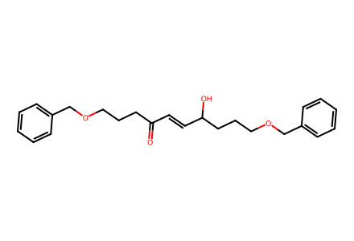
O=C(/C=C/C(O)CCCOCc1ccccc1)CCCOCc1ccccc1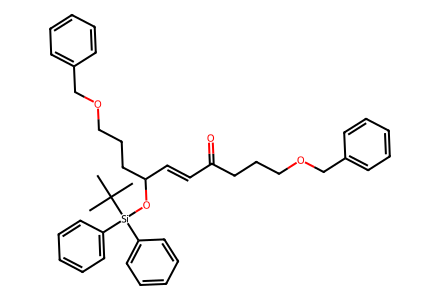
CC(C)(C)[Si](OC(/C=C/C(=O)CCCOCc1ccccc1)CCCOCc1ccccc1)(c1ccccc1)c1ccccc1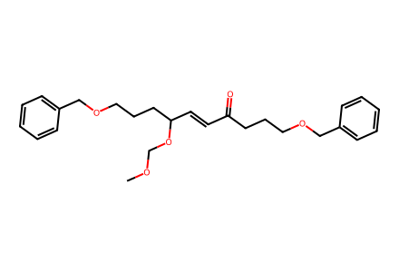
COCOC(/C=C/C(=O)CCCOCc1ccccc1)CCCOCc1ccccc1
CC(C)(C)[Si](O[C@H](CCCOCc1ccccc1)[C@@H]1O[C@@H]1C(=O)CCCOCc1ccccc1)(c1ccccc1)c1ccccc1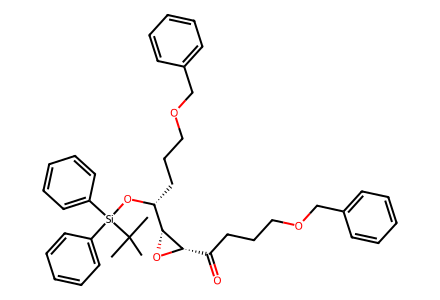
CC(C)(C)[Si](O[C@H](CCCOCc1ccccc1)[C@H]1O[C@H]1C(=O)CCCOCc1ccccc1)(c1ccccc1)c1ccccc1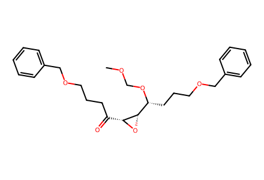
COCO[C@H](CCCOCc1ccccc1)[C@@H]1O[C@@H]1C(=O)CCCOCc1ccccc1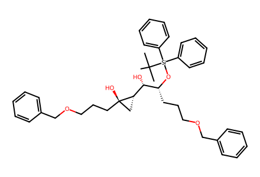
CC(C)(C)[Si](O[C@H](CCCOCc1ccccc1)[C@@H](O)[C@@H]1C[C@]1(O)CCCOCc1ccccc1)(c1ccccc1)c1ccccc1CC(C)(C)[Si](O[C@H](CCCOCc1ccccc1)[C@H](O)[C@H]1C[C@@]1(O)CCCOCc1ccccc1)(c1ccccc1)c1ccccc1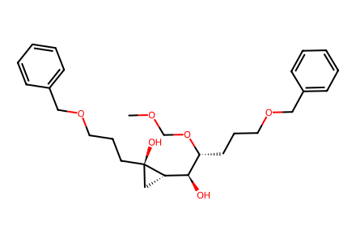
COCO[C@H](CCCOCc1ccccc1)[C@@H](O)[C@@H]1C[C@]1(O)CCCOCc1ccccc1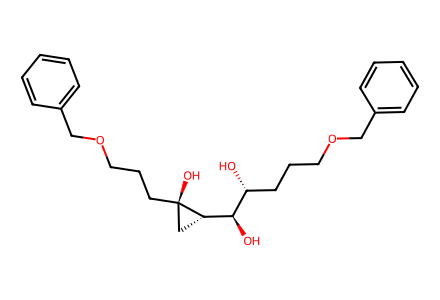
O[C@H]([C@H](O)CCCOCc1ccccc1)[C@@H]1C[C@]1(O)CCCOCc1ccccc1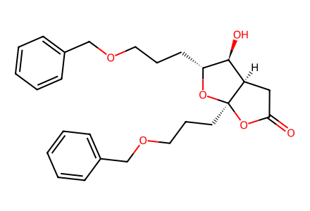
O=C1C[C@@H]2[C@H](O)[C@@H](CCCOCc3ccccc3)O[C@]2(CCCOCc2ccccc2)O1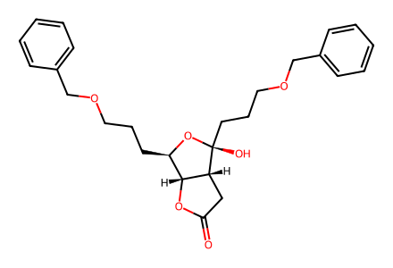
O=C1C[C@@H]2[C@H](O1)[C@@H](CCCOCc1ccccc1)O[C@]2(O)CCCOCc1ccccc1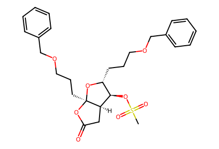
CS(=O)(=O)O[C@H]1[C@H]2CC(=O)O[C@@]2(CCCOCc2ccccc2)O[C@@H]1CCCOCc1ccccc1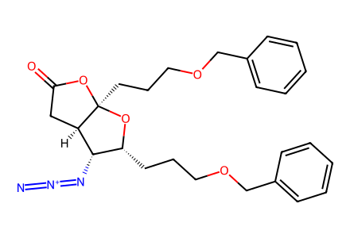
[N-]=[N+]=N[C@@H]1[C@H]2CC(=O)O[C@@]2(CCCOCc2ccccc2)O[C@@H]1CCCOCc1ccccc1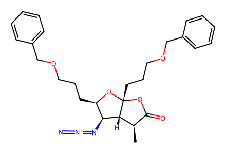
C[C@@H]1C(=O)O[C@@]2(CCCOCc3ccccc3)O[C@H](CCCOCc3ccccc3)[C@H](N=[N+]=[N-])[C@@H]12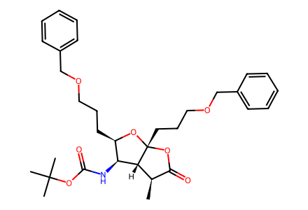
C[C@@H]1C(=O)O[C@@]2(CCCOCc3ccccc3)O[C@H](CCCOCc3ccccc3)[C@H](NC(=O)OC(C)(C)C)[C@@H]12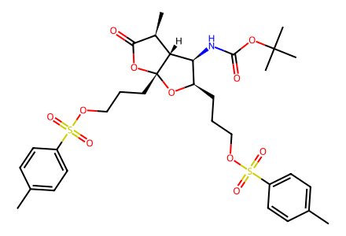
Cc1ccc(S(=O)(=O)OCCC[C@H]2O[C@]3(CCCOS(=O)(=O)c4ccc(C)cc4)OC(=O)[C@@H](C)[C@@H]3[C@H]2NC(=O)OC(C)(C)C)cc1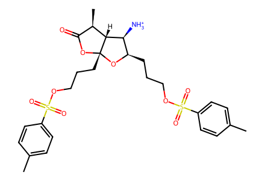
Cc1ccc(S(=O)(=O)OCCC[C@H]2O[C@]3(CCCOS(=O)(=O)c4ccc(C)cc4)OC(=O)[C@@H](C)[C@@H]3[C@H]2[NH3+])cc1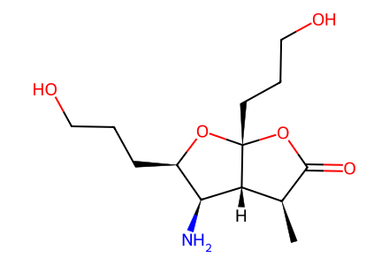
C[C@@H]1C(=O)O[C@@]2(CCCO)O[C@H](CCCO)[C@H](N)[C@@H]12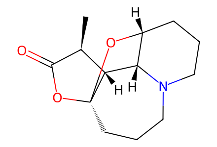
C[C@@H]1C(=O)O[C@@]23CCCN4CCC[C@@H](O2)[C@H]4[C@@H]13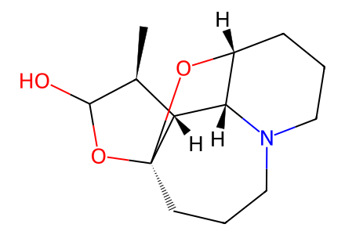
C[C@@H]1C(O)O[C@@]23CCCN4CCC[C@@H](O2)[C@H]4[C@@H]13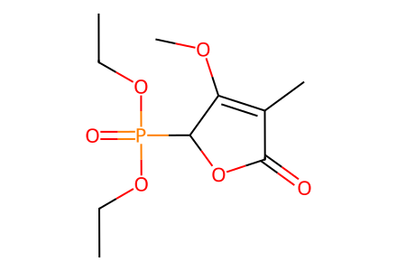
CCOP(=O)(OCC)C1OC(=O)C(C)=C1OC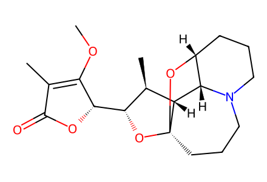
COC1=C(C)C(=O)O[C@H]1[C@H]1O[C@@]23CCCN4CCC[C@@H](O2)[C@H]4[C@H]3[C@@H]1C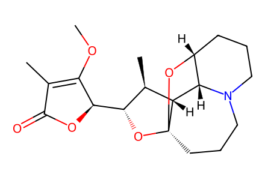
COC1=C(C)C(=O)O[C@@H]1[C@H]1O[C@@]23CCCN4CCC[C@@H](O2)[C@H]4[C@H]3[C@@H]1C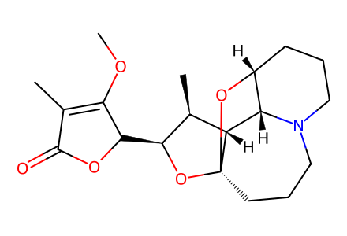
COC1=C(C)C(=O)OC1[C@@H]1O[C@@]23CCCN4CCC[C@@H](O2)[C@H]4[C@H]3[C@@H]1C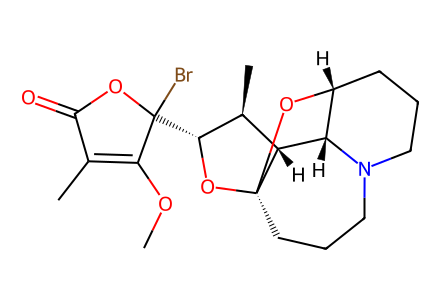
COC1=C(C)C(=O)OC1(Br)[C@H]1O[C@@]23CCCN4CCC[C@@H](O2)[C@H]4[C@H]3[C@@H]1C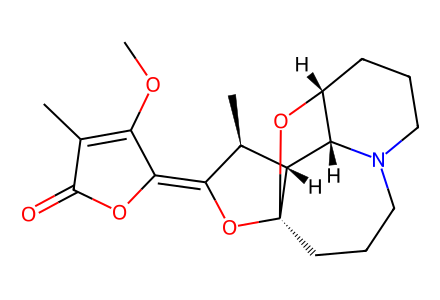
COC1=C(C)C(=O)O/C1=C1\O[C@@]23CCCN4CCC[C@@H](O2)[C@H]4[C@H]3[C@@H]1C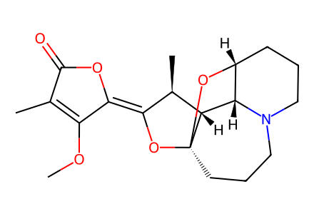
COC1=C(C)C(=O)O/C1=C1/O[C@@]23CCCN4CCC[C@@H](O2)[C@H]4[C@H]3[C@@H]1C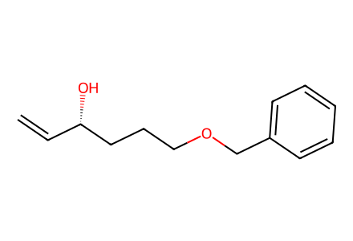
C=C[C@H](O)CCCOCc1ccccc1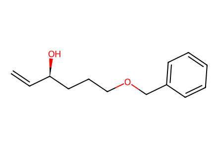
C=C[C@@H](O)CCCOCc1ccccc1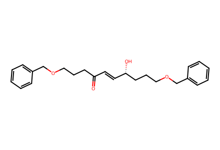
O=C(/C=C/[C@H](O)CCCOCc1ccccc1)CCCOCc1ccccc1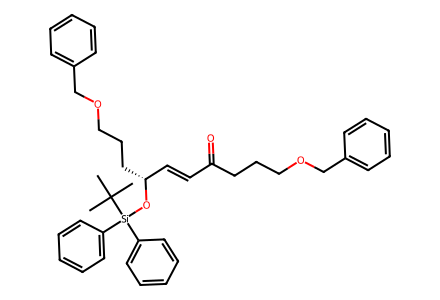
CC(C)(C)[Si](O[C@@H](/C=C/C(=O)CCCOCc1ccccc1)CCCOCc1ccccc1)(c1ccccc1)c1ccccc1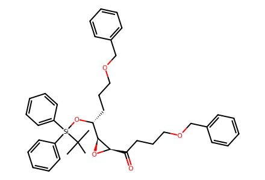
CC(C)(C)[Si](O[C@H](CCCOCc1ccccc1)[C@@H]1O[C@@H]1C(=O)CCCOCc1ccccc1)(c1ccccc1)c1ccccc1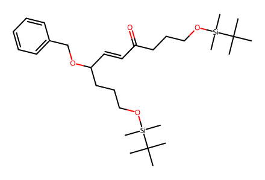
CC(C)(C)[Si](C)(C)OCCCC(=O)/C=C/C(CCCO[Si](C)(C)C(C)(C)C)OCc1ccccc1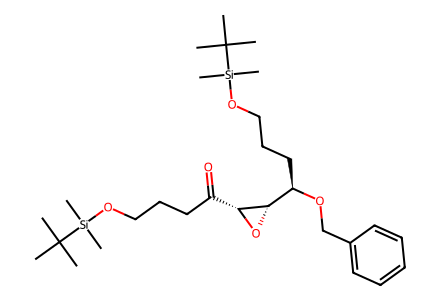
CC(C)(C)[Si](C)(C)OCCCC(=O)[C@H]1O[C@H]1[C@@H](CCCO[Si](C)(C)C(C)(C)C)OCc1ccccc1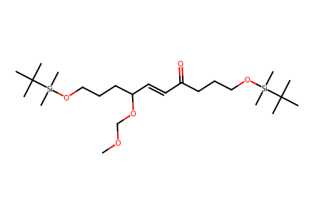
COCOC(/C=C/C(=O)CCCO[Si](C)(C)C(C)(C)C)CCCO[Si](C)(C)C(C)(C)C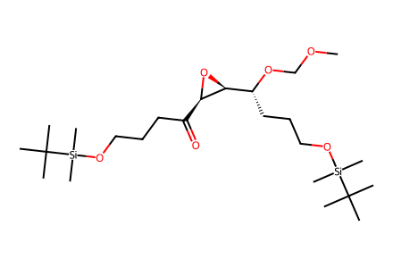
COCO[C@H](CCCO[Si](C)(C)C(C)(C)C)[C@@H]1O[C@@H]1C(=O)CCCO[Si](C)(C)C(C)(C)C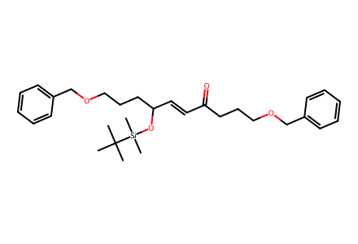
CC(C)(C)[Si](C)(C)OC(/C=C/C(=O)CCCOCc1ccccc1)CCCOCc1ccccc1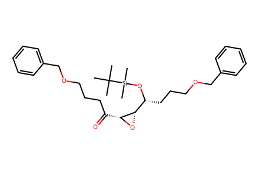
CC(C)(C)[Si](C)(C)O[C@H](CCCOCc1ccccc1)[C@@H]1O[C@@H]1C(=O)CCCOCc1ccccc1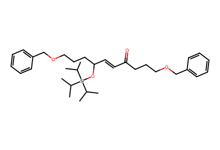
CC(C)[Si](OC(/C=C/C(=O)CCCOCc1ccccc1)CCCOCc1ccccc1)(C(C)C)C(C)C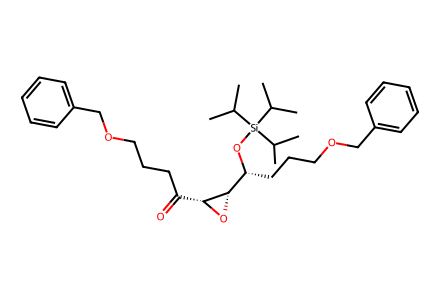
CC(C)[Si](O[C@H](CCCOCc1ccccc1)[C@@H]1O[C@@H]1C(=O)CCCOCc1ccccc1)(C(C)C)C(C)C